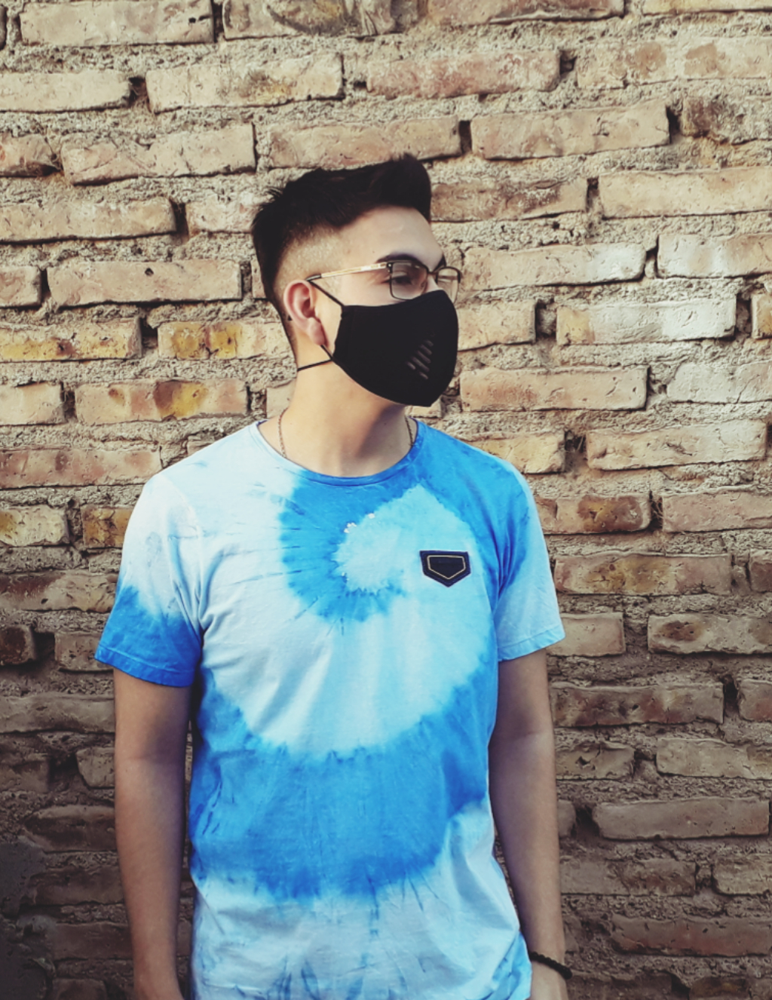

<ion-header>
  <ion-toolbar color="success">
    <ion-buttons slot="start">
      <ion-back-button defaultHref="inicio"></ion-back-button>
    </ion-buttons>
    <ion-title>Autor</ion-title>
  </ion-toolbar>
</ion-header>

<ion-content class="ion-padding">
  <ion-grid>
    <ion-row>
      <ion-col class="ion-text-center">
        
      </ion-col>
    </ion-row>
  </ion-grid>

  <ion-card class="borde-style">
    <ion-card-header color="light">
      <ion-card-title>Información</ion-card-title>
    </ion-card-header>

    <ion-card-content class="ion-margin-top">
      Aplicación desarrollada por Elias Uribe. A continuación puede consultar
      más información sobre el autor.
    </ion-card-content>

    <ion-item routerLink="/curriculum">
      <ion-icon
        color="success"
        name="newspaper-outline"
        slot="start"
      ></ion-icon>
      <ion-label>Currículum vitae</ion-label>
    </ion-item>

    <ion-item>
      <ion-icon color="success" name="mail-outline" slot="start"></ion-icon>
      <ion-label>neossuribe@gmail.com</ion-label>
    </ion-item>

    <ion-item>
      <ion-icon color="success" name="logo-twitter" slot="start"></ion-icon>
      <ion-label>@EliasUribe</ion-label>
    </ion-item>

    <ion-item>
      <ion-icon color="success" name="call-outline" slot="start"></ion-icon>
      <ion-label>299 839 7453</ion-label>
    </ion-item>
  </ion-card>
</ion-content>
